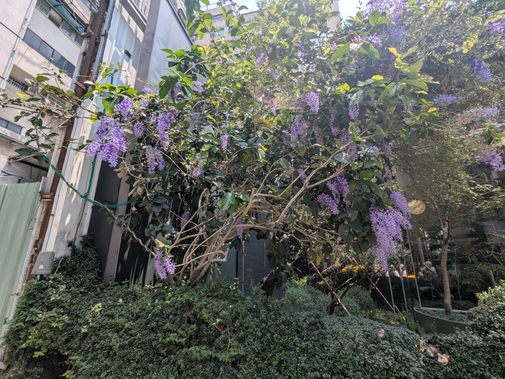
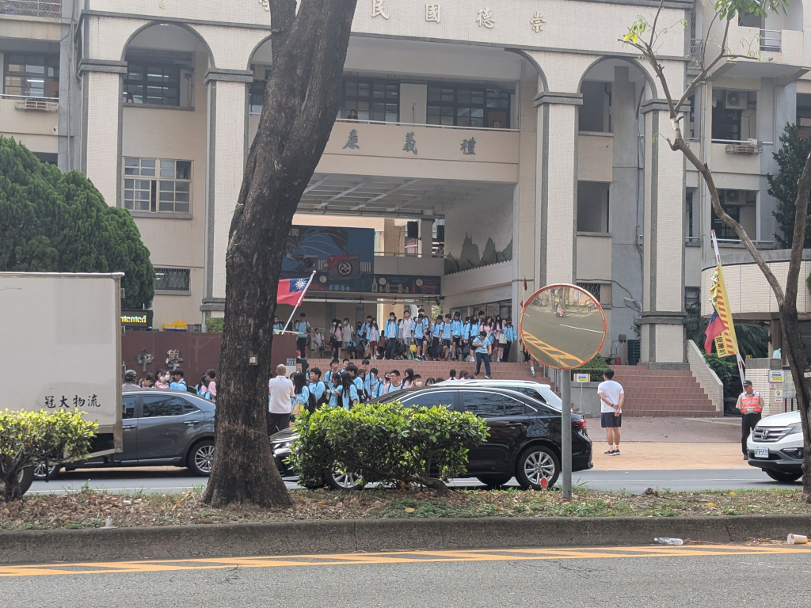
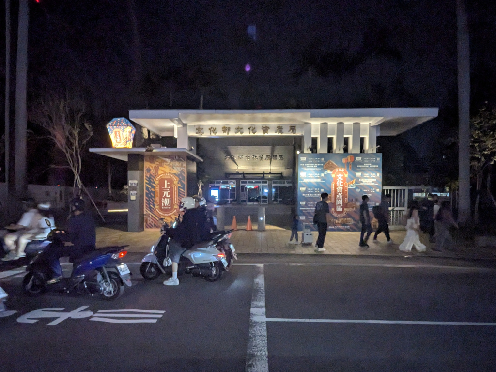
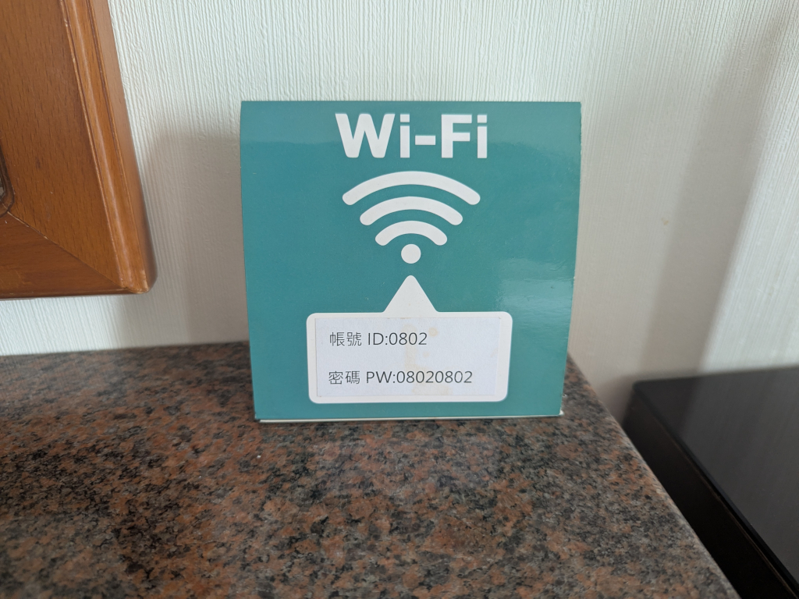
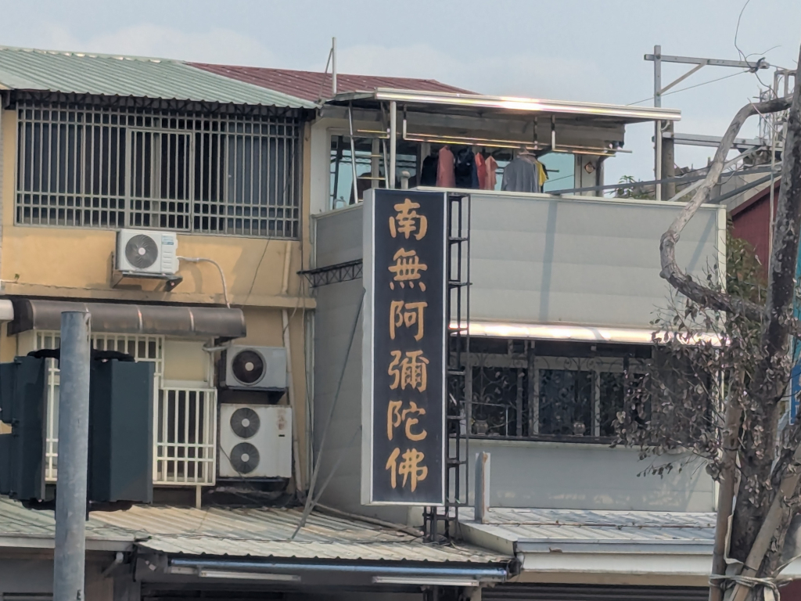
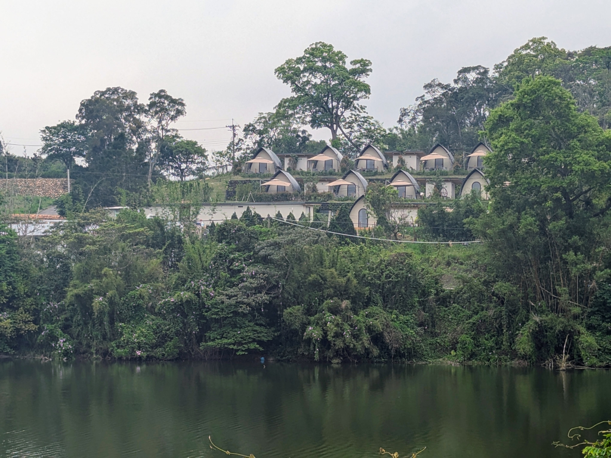
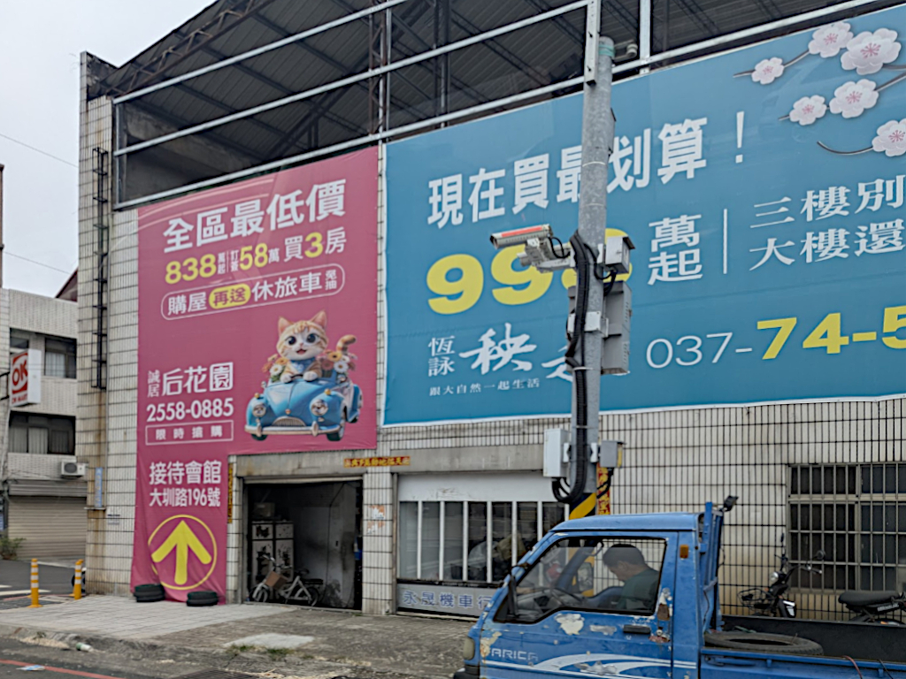

In a 鹿港 temple. | ||
Miscellaneous Pictures  A beautiful tree outside the 櫟社 coffee shop in downtown Taichung. The 臺中市立崇德國民中學 (Chongde Junior High School) is directly across the street from our hotel. One day, we saw the kids coming out at the end of the day. It was quite orderly; a class stood at the top of the stairs until the previous class dispersed and made room for them on the sidewalk below, then they were released. One class at a time was released, keeping the departure routes away from the school safe. The 文化部文化資鹿局 (Bureau of Cultural Heritage, Ministry of Culture) in Taichung which we passed riding in Zhiwei's car one evening. Wi-Fi information for our room, Room 802.
After having lunch at the 不老125 Senior Center which is right next to the 國立臺灣體育運動大學 (National Taiwan University of Sport)
complex, we walked by their stadium where I noticed Taichung had a professional
volleyball team, 臺中連莊職業排球隊 (the Taichung Lianzhuang Professional Volleyball
Team).
 This sign reads "南無阿彌陀佛", and is, from Wikipedia, "...a mantra in Buddhism, meaning 'Homage to Amitabha Buddha' or 'I seek refuge in the Buddha of Infinite Light and Life'. It is a practice of faith and recitation aimed at achieving peace, wisdom, and eventual rebirth...." Reciting the name is believed to invoke the compassion of Amitabha, providing protection and reducing negative karma. The sign can be seen all over Taiwan, in temples, of course, and in homes, and even pasted on light poles. But I don't recall ever seeing one this big. These weird-looking huts sat on the hill across 西湖 (West Lake) from where we were sitting at 映象水岸, a small, remote coffee shop/restaurant near Sanyi. They're 杉棲山 (Shanqi Mountain), a sort of B&B, and can be rented out for what their website calls "glamping" (glamourous camping). Here are some pictures from the web of the inside. It does look pretty glamorous. So I took this picture from the car on the way home from our visit to the Longteng Broken Bridge, and I can't remember why. I do remember there was some reason I took it, but I can't remember what it was. The ads are for apartments for sale, and, just because I like it, I decided to include it here. | ||
{kind=link}
{kind=link}
{kind=link}